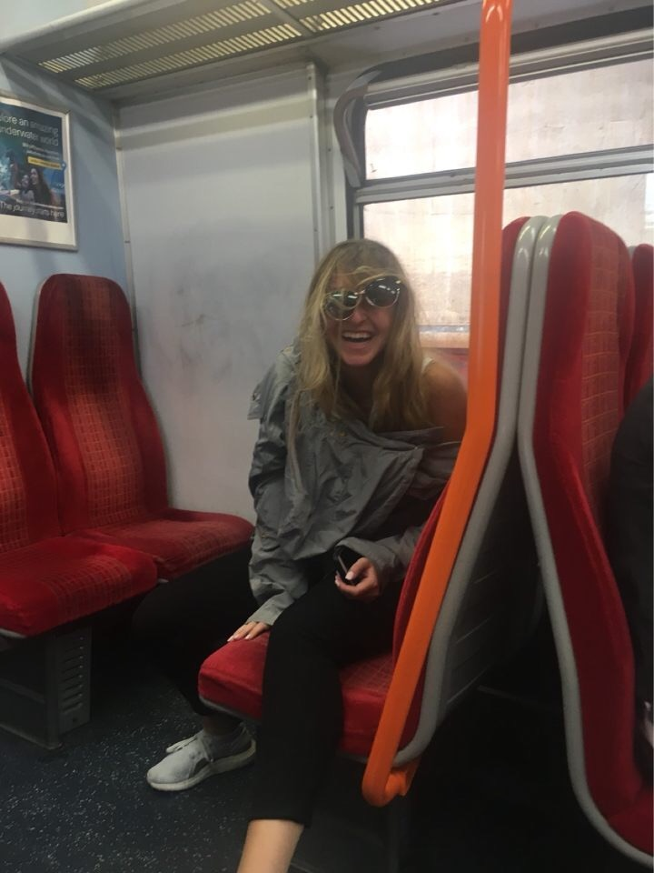
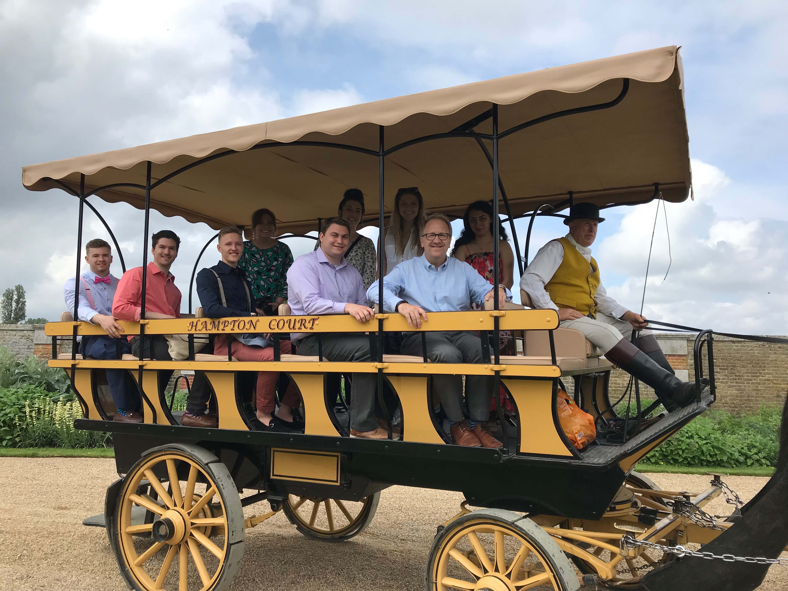
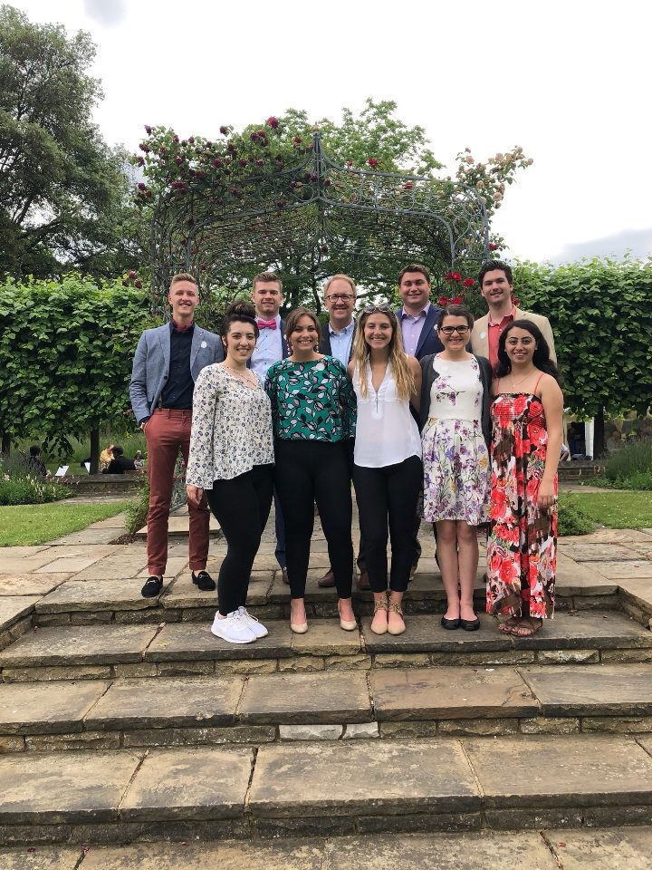

Our day began with a far less luxurious (i.e. trolley-less) train ride to Hampton Court Palace. On the bumpy ride in the gallows of economy rail transport, we did see the world-famous Wimbledon tennis stop whizz by us. If Annika wasn't fast asleep earning her newest name, "Chewbacca", it could have had the potential to be a mutually shared enlightening experience for the whole group.
Annika Becomes Chewbacca

We disembarked the train and took a quick walk across the Thames to a soon-to-be highlight for all, Hampton Court Palace. The architecture is unbelievable: vaulted ceilings, huge murals, the Tudor Style (a spitting image of Oakland’s Meadowbrook), all on an unimaginable scale. We ditched the tour headsets in order to shadow our fearless professor whose commentary was comprised of more color and passion than any of the electronic voices could ever wish to possess. Our first stop was the Chapel Royale. Here we saw the royal box and the baptismal font used for Edward’s baptism. While Engle distracted the palace guards, Sarah snapped illegal pictures of the fake crown jewels in a Plexiglas box. Turning the finest members of Oakland University's honors college into criminals had joined the list of how we truly made Richmond Court "wild". We exited via Henry’s apartments, and had a treasure hunt in the banqueting room: who could find the “H A” (Henry + Anne) insignia that survived the “cleansing” following her execution?
Then came the tour of the vast gardens with Yute trees shaped like mushrooms. Additionally, an unplanned horse carriage ride, which was also a highlight of the trip. We were introduced to Rufus and Ed (well, Engle said his name was Ed). [Editor note: it was Massey]. On our ride, we learned about King Henry VIII’s hunting style, which was simply to “attack and slaughter.” Curiously, we learned the Henry was hunting the hour of Queen Anne’s execution, and when he heard the cannon signal that the deed was done, he went to the chapel to file immediately his wedding bans to marry Jane Seymour. We also learned how William III and Mary destroyed much of the palace in order to get an “open concept” “river view” from their master bedroom. And with that, HGTV was born. Off carriage, we strolled by the walled gardens to marvel at the world’s largest grape vine. We also saw the tennis courts, and Henry’s empty wine cellar.
Mounting Tom and Massey

The group assembled at the train station for a 1:00pm ride back to London, everyone took lunch onboard. From the London Waterloo train station we walked up the Thames to Lambeth Palace, wearing our finest clothes for the Archbishop’s garden party. Alas, we could only see His Grace from afar, through his office window. And the garden party turned out to be punch in a Styrofoam cup (at a pricey one pound cost). Nevertheless, we got great group pictures in all our finery, followed by a tour of the Archbishop’s chapel. At the conclusion of the Garden Party, our group was met by Amy. Amy was excited to tell us all about 19th century marriage registers. Engle and Emma were the only ones who managed to stay awake for the entire talk. The US army has been notified of their raw potential and courage.
The Crew Outdressing His Grace at the Garden Party

We tubed back to Richmond Court, and after a quick refresh, Engle treated us to dinner at the Crown and Sceptre. The place was lined with gaggles of London's finest millennials. The “fish and chippies” were amazing, but the hamburgers were dry and tasteless. We convinced the bartender to play “I’m Upset” by the GOAT, Drake. We watched the pub's inhabitants begin to bob their heads up and down in approval. They were feeling the GOAT. This was followed by beating Jonathan Engle in a trans-continental meme war. All in all, the Crown and Sceptre taught us a valuable lesson about the true meaning of melleniality - and how sometimes, all it takes is the bravery to ask a bartender to play the GOAT's latest track to gain the acceptance of your peers.
Following dinner, most of the group meandered back home. Emma and Stephanie swore they heard gunshots; the gallant, and fearless professor did a sweep of Richmond Court and environs only to announce it was the backfire of a motorcycle. Relieved, all went back to sleep to prepare for the coming day.